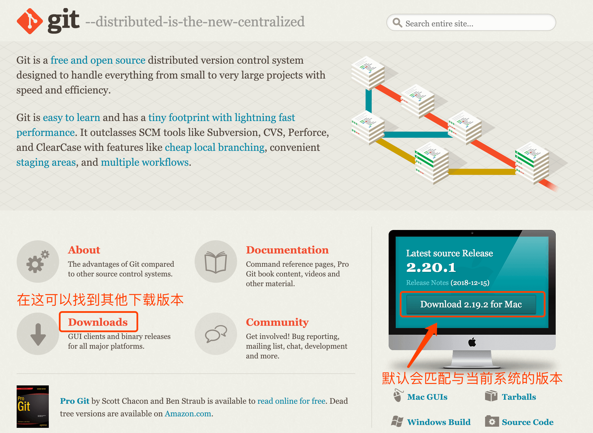

（一）教你使用Hexo-Github-Pages搭建个人独立博客
本文于 516 天之前发表，文中内容可能已经过时。
# 前言
若您在安装过程中遇到问题或无法找到解决方式，可以在评论区提问，我会尽力帮助您解决问题！
# 推荐理由
1. 免费
Github 提供 GitHub Pages 服务是免费的，有 300MB 的空间。
2. 开源
由于 github 开源的原因，有很多人参与其中，自然技术支持很好。
3. 便捷
博客完全托管在 github 上，基本上不需要花时间去管理，博客使用 Markdown 语法，上手很容易。
# 需要了解的内容（能掌握更好）
- html+css+javascript
- git 基本语法
- markdown 语法
- nodejs
目前，在 github 上搭建博客系统使用最多就是 Hexo 和 Jekyll。
Hexo 是基于 Nodejs 开发的，Jekyll 是基于 Ruby 开发的。
说明：
文中出现的命令，Windows 用户注意，命令前面有 $ 的表示在 Git Bash 中执行，没有的在 CMD 命令窗口执行。
Linux 和 MAC 系统在终端下不区分。
# 系统环境配置
安装 Hexo 相当简单。然而在安装前，您必须检查电脑中是否已安装下列应用程序:
- Git
- Node.js
# 安装 Git 客户端
1.下载 Git 客户端
2.安装 Git 客户端
Windows 用户直接 Next 就可以了。Mac 和 Linxu 系统的用户可通过命令方式安装，这里不详细介绍了。
# 安装 Node.js
检查 node.js 是否安装:
1 | $ node -v |
# 初探 Hexo
以下操作是在blog文件夹中
1.安装 Hexo
1 | $ npm install hexo-cli -g |
说明： hexo 全局安装一次就够了，后面可以直接使用 hexo 相关的操作。
# 创建本地博客文件夹
1.初始化 hexo
文件夹名称：blog（可自定义）
新建一个网站。如果没有设置 blog 文件夹 ，Hexo 默认在目前的路径新建文件夹 blog，并且建立网站。
1 | $ hexo init blog |
2.新建一篇文章
文章标题：title（可自定义）
1 | $ hexo new title |
如果标题包含空格的话，请使用引号括起来。
1 | $ hexo new "First Title" |
3.启动 Hexo
1 | $ hexo server |
启动之后，打开浏览器，在地址栏输入：http://localhost:4000 ，你就会看到 Hexo 的示例页面。
注：此时可以初始化 git 本地仓库了，或者是等本地博客搭建好之后也可以。
# 结语
第一步，我们搭建了本地的 Hexo 博客，并通过
http://localhost:4000访问了它。
手把手教你使用 Hexo-Github-Pages 搭建个人独立博客（一）
第二步，我们要将博客上传到 GitHub，并通过Github-Pages配置在网页上提供访问。详情请看文章：
手把手教你使用 Hexo-Github-Pages 搭建个人独立博客（二）
第三步，部署 Hexo，将 hexo 生成的静态内容部署到配置的仓库中，详情请看文章：
手把手教你使用 Hexo-Github-Pages 搭建个人独立博客（三）